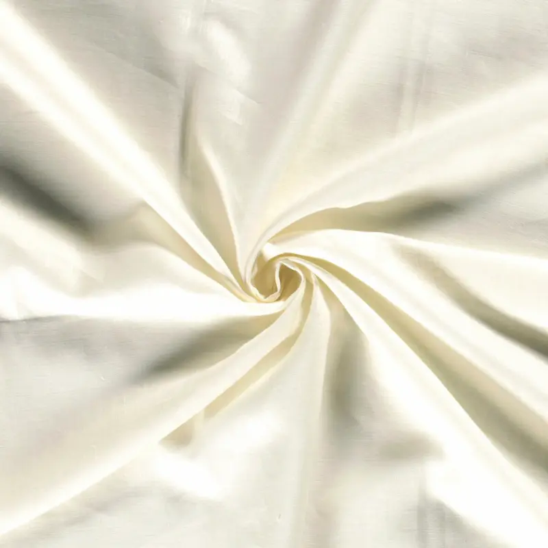

Premium Donji Veš
100% prirodni materijali • Bez sintetike • Zdravlje i udobnost
Zašto AresNyX?
Prirodni Materijali
100% pamuk, lan i bambus bez ikakvih veštačkih dodataka

Zdravstvene Prednosti
Opušten kroj koji štiti vaše zdravlje
Proizvodnja u Srbiji
Kvalitet koji potiče iz naше zemlje
Naša Filozofija
Znamo da donji veš ne bi trebalo da bude kompromis između stila i zdravlja. Zato smo kreirali AresNyX - brend koji kombinuje luksuzni dizajn sa zdravstvenim benefitima prirodnih materijala.